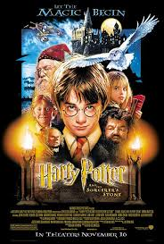
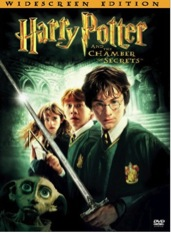
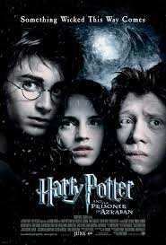
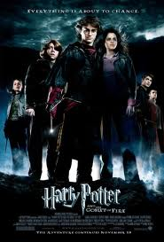
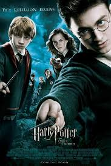
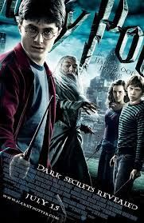
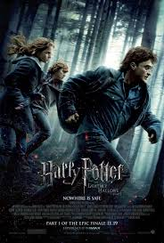
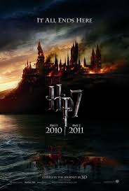

Harry Potter and the Sorcerer's Stone
The first movie follows the book extremely closely. It stars an all star cast of British Actors. Throughout the series, the best of the best will appear in one of the HP movies. Luckily, the producers picked amazing leads. The young Dan Radcliffe, Rupert Grint and Emma Watson were perfect for the roles and grew up to be great actors.

Harry Potter and the Chamber of Secrets
The second movie probably at the bottom end of the best HP movies. The problem is that it has completely same look as the first movie. Like the first, it is incredibly faithful. This will be the last time Christopher Columbus will direct a HP movie. He does a great job with these first two movies, but Harry is growing and the movies need to do as well.

Harry Potter and the Prisoner of Azkaban
The third installment is nothing like the last two. Alfonso Cuaron is the new director, and he takes a completely different approach. Everything in the movie is edgier and there are some very beautiful touches. Due to Alfonso's guidance, the movie is considered to be the critically best film in the series. Notable is the casting change for Dumbledore. During early filming, Richard Harris died. Michael Gambon was brought in as the replacement. Fans of Dumbledore have never been satisfied with Gambon's performance. He is not like Sir Ian McKellen as Gandalf.

Harry Potter and the Goblet of Fire
The fourth film could have gone a lot of different ways. There had been talk if there was a need for recasting because the actors were growing up fast. They soon realized that was an impossibility. Another consideration was to split the book into two films. However, that was nixed as well. This is the first PG-13 movie, and the kids have definitely grown up. However, the magic of the previous movies is still in full force. Ralph Fiennes joins the cast as the famous Lord Voldemort.

Harry Potter and the Order of the Phoenix
David Yates comes on as director and he will stay as director till the very end. Ironically this is the shortest movie, even though it is based on the longest book. Much was cut, but overall the story is still riveting. Helena Bonham Carter joins the cast as the wicked Bellatrix Lestragne. Imelda Staunton plays the wicked Dolores Umbridge perfectly. Finally, Evanna Lynch plays the loony student, Luna Lovegood.

Harry Potter and the Half-Blood Prince
The sixth movie is very much an ode to the other movies. This is the last movie set in Hogwarts, and this a lot of great callbacks to earlier movies. There is also a great mix of laughter and excitement throughout the movie. There is a major event that takes place in the middle of the movie that is not in the book at all. This riled many fans. Overall, the movie got great reviews similar to the third movie.

Harry Potter and the Deathly Hallows Part 1
This is the beginning of the end. Warner Bros. decided that it was time to split up the book into two movies. This technique will be used later by Twilight, Hunger Games, and even the Hobbit is split into three movies. From the battle in the sky over London to the espionage break in of the Ministry of Magic, there are great scenes. However, the trio roaming around the forest does get old at times. The movie ends on a dramatic note with the death of a beloved character.

Harry Potter and the Deathly Hallows Part 2
The first part deals with about two-thirds of the book, which leaves the second movie to spend more time on the most important part of the book. Specifically, the Battle of Hogwarts is shown in its full glory. Just like the seventh book, the last movie ends on a perfect note.
